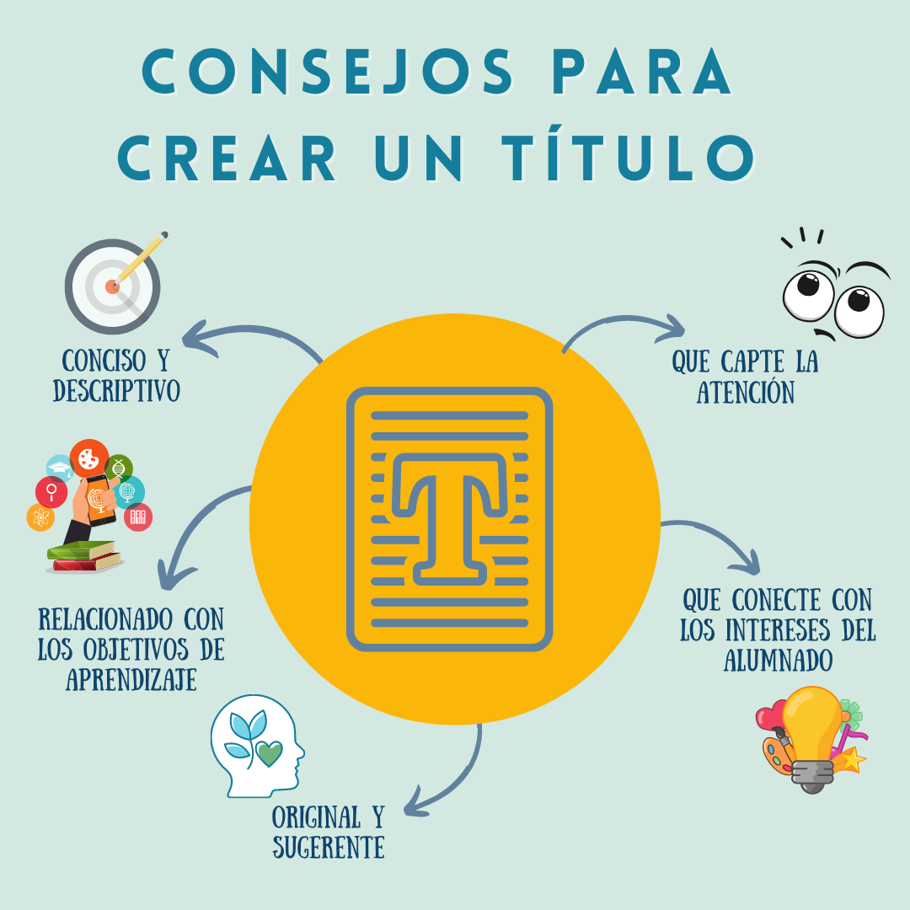
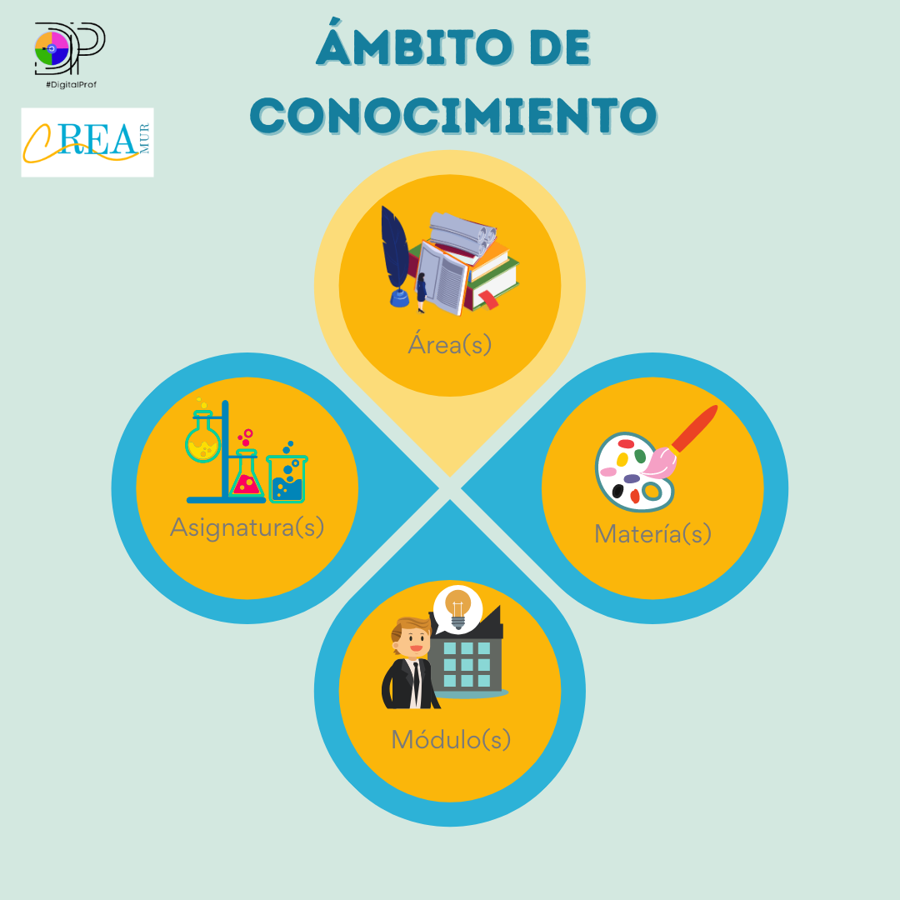
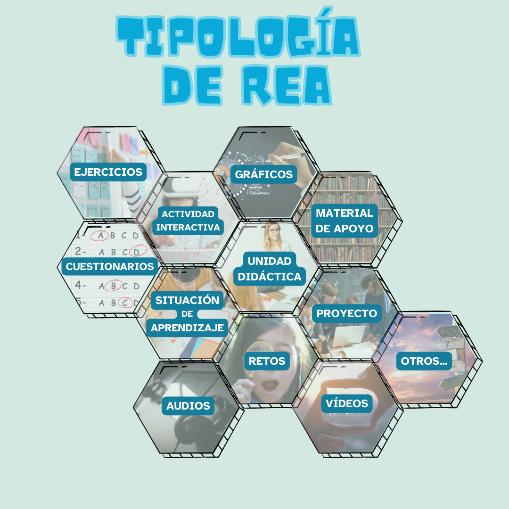

La ficha técnica proporciona información detallada y estructurada sobre un Recurso Educativo Abierto (REA), ofreciendo a los docentes una visión general y precisa de dicho recurso. A continuación, se describen los elementos que se incluyen:
TÍTULO

Algunos consejos para crear un buen título son:
Conciso y descriptivo: el título debe ser breve y claro, transmitiendo una idea general de la temática y contenido del recurso educativo.
Captador de atención: debe ser atractivo y llamar la atención de los estudiantes, despertando su interés y motivación por explotar el recurso educativo.
Conecte con los intereses del alumnado: debe despertar el interés de los estudiantes y establecer las expectativas sobre lo que van a aprender mediante una experiencia de aprendizaje emocionante.
Original y sugerente: tiene que sugerir un enfoque novedoso que despierte la curiosidad y la imaginación de los estudiantes.
Relacionado con los objetivos de aprendizaje: debe reflejar los objetivos de aprendizaje, mostrando lo que los estudiantes van a lograr al completarla.
AUTOR
Nombre completo del autor o autores del recurso educativo.
ETAPA EDUCATIVA
Etapa educativa a la que está destinado el recurso educativo, por ejemplo:
- Educación Infantil.
- Educación Primaria.
- Educación Secundaria Obligatoria (ESO).
- Bachillerato.
- Ciclos formativos.
NIVEL
Nivel educativo específico dentro de la etapa seleccionada, por ejemplo:
- Infantil 3 años.
- 5º de Primaria.
- 3º de ESO.
- 1º de Bachillerato.
- 2º Ciclo de Grado Medio.
ÁMBITO DE CONOCIMIENTO

Área o áreas de conocimiento, materia(s), asignatura(s) o módulo(s) con los que se relaciona el recurso educativo.
TEMÁTICA
Palabras claves que definen el contenido principal del recurso.
DESCRIPCIÓN
Introducción clara y breve con la contextualización, justificación y/o descripción del producto final del recurso educativo.
TIPOLOGÍA DEL RECURSO

Algunos ejemplos de recursos educativos abiertos que los docentes podrían elaborar son:
- Actividades/ejercicios/cuestionarios.
- Recurso multimedia.
- Actividad interactiva.
- Unidad didáctica.
- Proyecto.
- Situación de aprendizaje.
- Apuntes o materiales de clase.
- Enunciados de exámenes.
- Otros…
Nº SESIONES / TEMPORALIZACIÓN
(Opcional)
Tiempo estimado para completar el recurso educativo. Se puede dividir por secciones o módulos , indicando el tiempo recomendado para cada uno.